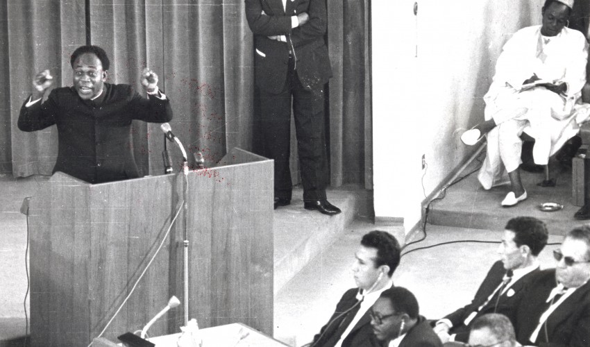

Dr. Kwame Nkrumah delivering a speech at the founding of AOU in Adisababa, Ethiopia
Here's a bit of the biography of Dr. Kwame Nkrumah:
1909 - Born in born September, Nkroful, Gold Coast (now Ghana).
1930 - After graduation from Achimota College, Dr. Kwame Nkrumah started his career as a teacher at Roman Catholic junior schools in Elmina and Axim and at a seminary.
1939 - After graduating in, obtained master’s degrees from Lincoln and from the University of Pennsylvania, having studied the literature of socialism.
1945 - He left the United States for England, where he organised the 5th Pan-African Cngress in Manchester.
1947 - Invited to serve as the UGCC’s (United Goal Cost Convention) general secretary, Kwame Nkrumah returned back to Ghana. Where he addressed meetings throughout the Gold Coast and began to create a mass base for the new movement.
1949 - When a split developed between the middle-class leaders of the UGCC and his radical supporters, Nkrumah formed the new Convetion People's Party (CPP), a mass-based party that was committed to a program of immediate self-government.
1950 - Dr. Kwame Nkrumah initiated a campaign of “positive action,” involving nonviolent protests, strikes, and noncooperation with the British colonial authorities.
1951 - The Gold Coast’s first general election on February 8, demonstrated the support the CPP had already won. Elected to Parliament, Nkrumah was released from prison to become leader of government business.
1952 - Dr. Kwame Nkrumah became the first Prime Minister of the Gold Coast.
1957 - When the Gold Coast and the British Togoland trust territory became an independent state within the British Commonwealth—as Ghana—in March that year, Nkrumah became the new nation’s first prime minister.
1964 - Ghana was officially designated a one-party state, with Nkrumah as life president of both nation and party.
1966- On February 24, while Nkrumah was visiting Beijing, the army and police in Ghana seized power. Returning to West Africa, he found asylum in Guinea, where he spent the remainder of his life.
1972 - He died of cancer in Bucharest, Romania at the age of 62.